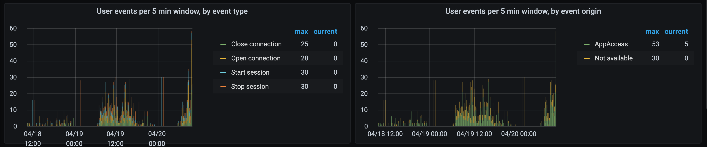

Sessions & Connections
Who are using the Sense environment right now?
This is a very basic question a sysadmin will ask over and over again.
This question is answered in great detail by the excellent Operations Monitor app that comes with Qlik Sense out of the box.
But that app give a retrospective view of the data - it does not provide real-time insights.
Butler SOS focus on the opposite: Give as close to real-time insights as possible into what’s happening in the Sense environment.
User behaviour is then an important metrics to track, more on this below.
Sessions
A session starts when a user logs into Sense and ends when the user logs out or the session timeout is reached.
There may be some additional corner-case variants, but the above is the basic, high-level definition of a session.
Tip
Some useful lingo: The events that can happen for sessions are that they can start and stop.
They can also timeout if the user is inactive long enough (the exact time depends on settings in the QMC).
As long as a user uses the same web browser and doesn’t use incognito mode or similar, the user will reuse the same session for all access to Sense.
On the other hand: If a user uses different browsers, incognito mode or similar, multiple sessions will be registered for the user in question. There is a limit to how many sessions a user can have at any given time.
Mashups and similar scenarios where Sense objects are embedded into web apps may result in multiple sessions being created. Whether or not this happens largely depends on how the mashup was created.
A good overview of what constitutes a session is found here.
Connections
A user may open more than one connection within a session.
A connection is opened when the user opens an app in a browser tab, or when a user opens a mashup which in turn triggers a connection to a Sense app to be set up.
Closing the browser tab will close the connection.
Tip
Some useful lingo: The events that can happen for connections are that they can be opened and closed.
User events
Butler SOS offers a way to monitor individual session and connection events, as they happen.
This is done by Butler SOS hooking into the logging framework of Qlik Sense, which will notify Butler SOS when users start/stop sessions or connections are being open/closed.
A blacklist in the main config file provides a way to exlcude some users (e.g. system accounts) from the user event monitoring.
Configuration of user events monitoring is done in the main config file’s Butler-SOS.userEvents section.
A step-by-step instruction for setting up user event monitoring is available in the Getting started section.
More info about the config file is available here.
On an aggregated level this information is useful to understand how often users log in/out, when peak ours are etc.
On a detailed level this information is extremely useful when trying to understand which users had active sessions when some error occured.
Think investigations such as “who caused that 250 GB drop in RAM we were just alerted about?”.

Feedback
Was this page helpful?
Glad to hear it! Please tell us how we can improve.
Sorry to hear that. Please tell us how Butler SOS can be improved.